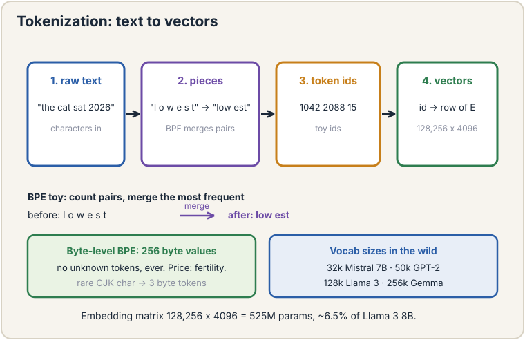
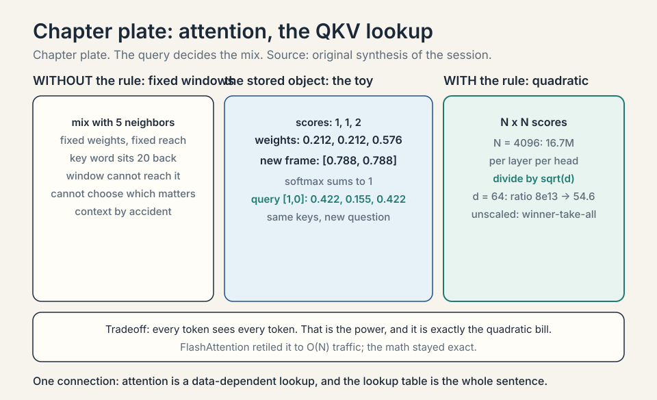
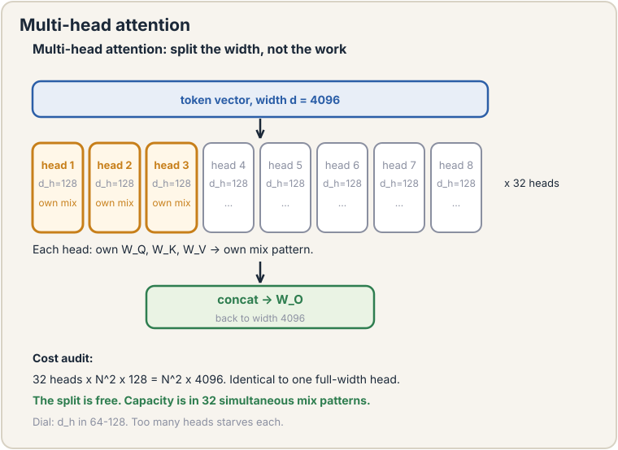
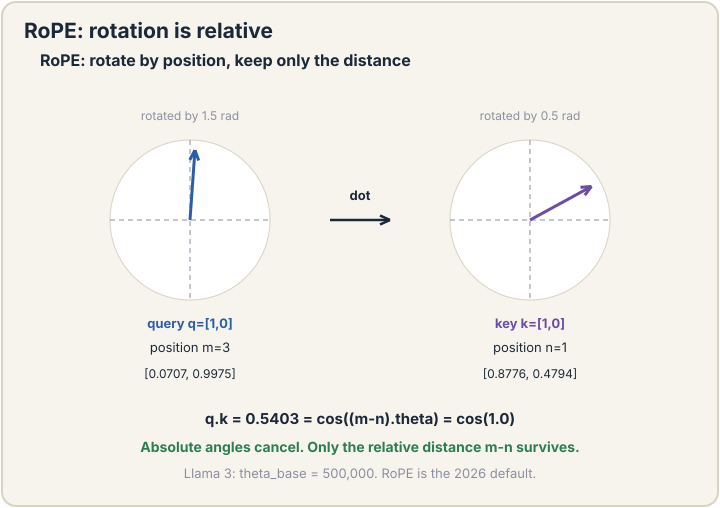
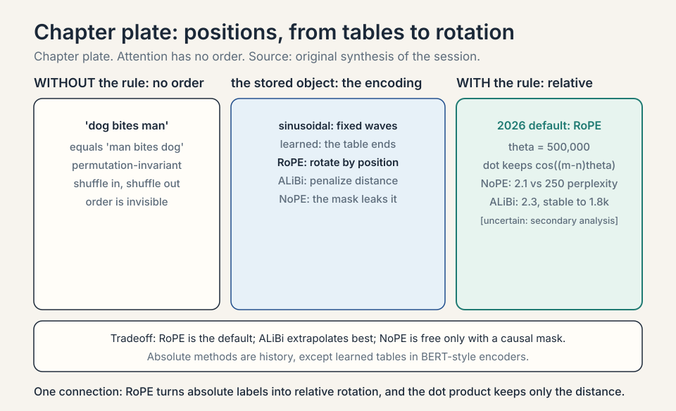
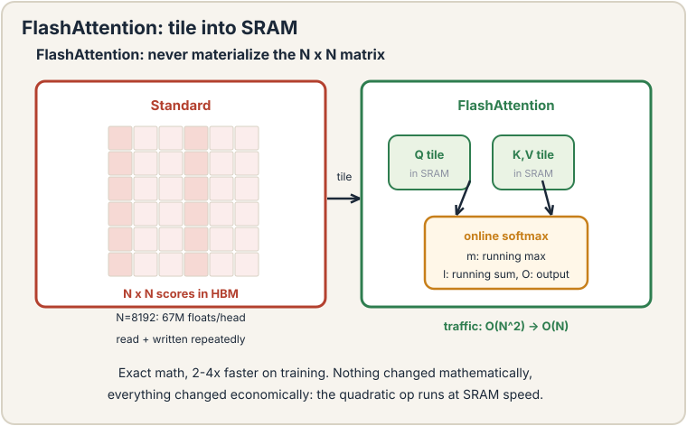
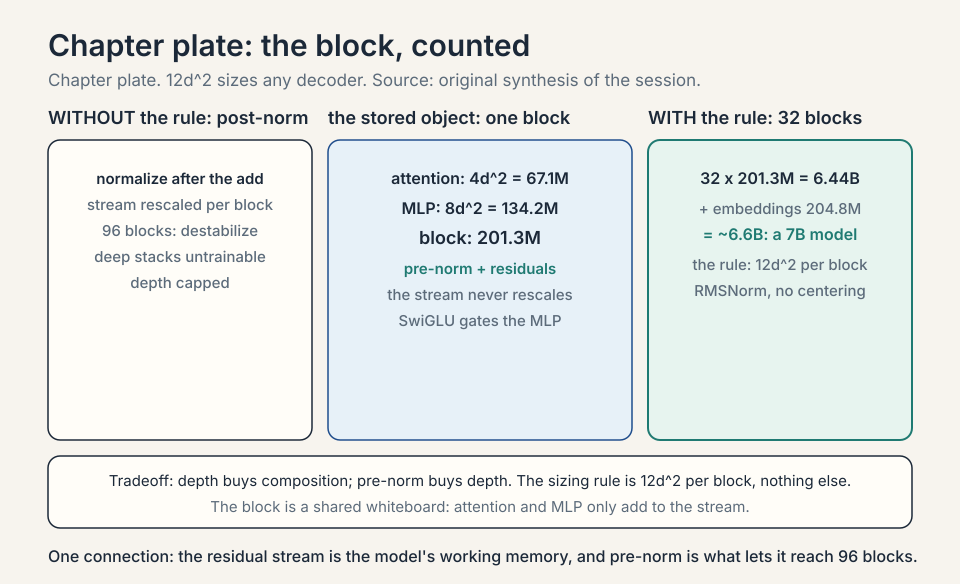
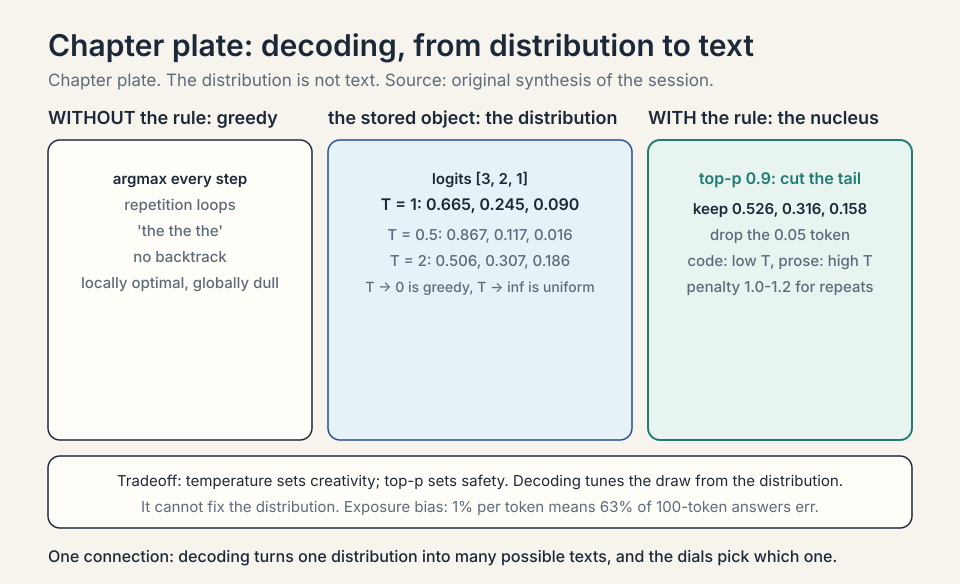

Lecture 14: Transformers and Autoregressive Language Models
Video blocked (ad-blocker or local file mode).
Watch on YouTubeVideo not loading? Watch on YouTube
Original lecture. Tengyu Ma builds the transformer: tokenization, autoregressive modeling, attention, and the quadratic bottleneck.
Coverage and sourcing
This lesson follows CS229 Lecture 14 (Spring 2026, Tengyu Ma): the transformer for autoregressive language modeling. The lecture’s own examples are the “internationalization” and “LLMefication” tokenizations, the counselor/frame attention toy, and the quadratic-bottleneck handoff to the guest lecture on transformer efficiency. Claims marked “October 2026” are later updates, each with its source. Worked toys not attributed to the lecture are original miniatures of its mechanisms. Sections on positional encodings, attention variants, and decoding are textbook background the lecture’s block assumes: the lecture names Q/K/V, the causal mask, RMSNorm, and the residual. This lesson fills in the family around them.
The job: finish the sentence
“The cat sat on the”. A human finishes it: “mat”. The job: build a machine that, given any text prefix, predicts the next piece of text. Do this well enough, at scale, and you get the foundation models of lecture 12. This chapter builds the machine that does it: the transformer.
The lecture places this in the course arc: a sequence of three to four lectures on large language models, starting from GPT-3 and the autoregressive paradigm it introduced. Non-autoregressive transformers are skipped: the autoregressive route won.
First attempt: predict whole sentences
The naive idea: model entire sentences at once. Learn p(“the cat sat on the mat”) as one number. Three facts kill it. Sentences have different lengths: a model for 6-word sentences cannot score 7-word ones. The space explodes: with 50,000 tokens, there are 50,000^10 possible 10-token sentences. And whole-sentence scores cannot generate: you need the next word, not a verdict on a finished sentence.
The autoregressive fix
The chain rule of probability factors the joint into a product of next-step predictions:
p("the cat sat") = p("the") * p("cat"|"the") * p("sat"|"the cat")
Each factor is one small question: given the words so far, what comes next? Train a model to answer that question on billions of words, and the product scores whole sequences. This is the autoregressive paradigm: predict one piece at a time, feed each prediction back as context for the next. Generation is just repeated prediction.
The lecture’s framing: each new token depends on the previous tokens, and the model learns the joint distribution as a product of conditionals. Causal is the other name for this: the future never influences the past.
Subchapter: the chain rule, priced
Count what the factorization buys. A 10-token sentence over a 50,000-token vocabulary: the joint table would need 50,000^10 entries. The factored model needs 10 conditional distributions, each over 50,000 outcomes: 10 x 50,000 numbers per sentence position, shared across all sentences by one neural network. The network has ~billions of parameters, not 50,000^10. The chain rule turns an impossible table into a learnable function. Every parameter is shared across every position: that sharing is what makes training on billions of words tractable.
Tokenization: what is a piece?
The model eats numbers, not text. Tokenization cuts text into pieces (tokens) and maps each to an integer. What should a piece be? Characters are too many steps per sentence. Words fail on rare words: “internationalization” as one token never shares anything with “internationalized” or “nation”, though they share meaning.
The answer is subword tokenization: split rare words into frequent pieces. “Internationalization” becomes “international” + “ization”. The model learns “international” once and reuses it. The lecture’s live example: “LLMefication” splits into pieces the model already knows. Vocabulary around 50,000 pieces covers a language. Every token becomes a vector (embedding). The model never sees raw text, only sequences of vectors.
Subchapter: BPE, worked
Byte-pair encoding (BPE) learns the pieces from data. Toy corpus: “low” x5, “lower” x2, “lowest” x6. Start with characters. Count pairs: “lo” appears 13 times, “ow” 13, “we” 8, “est” 6. Merge the most frequent pair (“lo” -> “lo”), recount, merge again (“low” -> “low”), then “we”+”r”, then “est”. After a few merges the vocabulary holds “low”, “low”+”er”, “low”+”est”: the morphology fell out of counting. Real BPE runs ~50,000 merges on gigabytes of text. The lecture names BPE-style subword as the answer and links the details to CS336.
Subchapter: the tokenizer family
Three algorithms, one idea. BPE: merge the most frequent pair, greedily, bottom-up. WordPiece (BERT): merge the pair that most improves the language-model likelihood, not the raw count. Unigram (SentencePiece): start with a huge vocabulary, prune the pieces whose removal hurts likelihood least, top-down. In practice all three produce similar vocabularies. The choice that matters more is the pre-tokenizer: how text is split before merging (spaces? punctuation? digits grouped?). GPT-style tokenizers split numbers into individual digits (“2026” -> “2”,”0”,”2”,”6”): arithmetic becomes digit-by-digit, which the model handles better than one “2026” token.
Subchapter: byte-level BPE, no unknown tokens
GPT-2’s tokenizer starts from 256 byte values, not characters. Any text, in any language, is bytes: there is no out-of-vocabulary token, ever. Rare Chinese characters fall back to their UTF-8 bytes (3 tokens per character instead of one). The price: non-Latin scripts cost more tokens per word (the fertility problem: the same sentence takes 2-3x more tokens in some languages, which means 2-3x the compute). Vocabulary sizes in the wild, verified October 2026 against public configs: 32k (Mistral 7B), 50k (GPT-2 class), 128k (Llama 3), 256k (Gemma class). Bigger vocabularies shorten sequences but grow the embedding matrix: 128k x 4096 = 524M parameters just for embeddings.
Subchapter: the embedding matrix, priced
Every token id becomes a d-dimensional vector via a lookup table: vocab_size x d parameters. Llama 3 8B (config verified October 2026): 128,256 x 4096 = 525M parameters, about 6.5% of the model. The output head is usually the same matrix transposed (tied embeddings): one matrix, two jobs. The lookup is the only part of the model that touches discrete tokens. Everything after is vectors. Tokenization quality shows up downstream: a tokenizer that splits “unhappiness” into “un”+”happiness” gives the model compositional pieces. One that emits a rare whole-word token gives it an island.

First attempt at context: fixed windows
Each token’s vector should carry its context: “frame” means one thing in “frame the situation” and another in “photo frame”. The naive idea: mix each token with its, say, 5 neighbors using fixed weights. It fails where it matters: in “The counselor helped frame the situation”, the word that disambiguates “frame” (“counselor”) sits 3 back, but in another sentence the key word sits 20 back. Fixed windows cannot reach it. Fixed weights cannot know which neighbor matters. The mixing must be data-dependent: each token decides, per sentence, which other tokens to listen to.
The key question
What if every token could look directly at every other token and decide how much each one matters, with the decision computed from the tokens themselves?
Attention, by hand
Attention is a lookup. Each token produces three vectors: a query (what I am looking for), a key (what I contain), and a value (what I offer). To build the new representation of token i: compare its query against every token’s key (scores), turn scores into weights summing to 1 (softmax), mix the values by the weights.
The lecture’s setup: the input is a sequence of row vectors h_1..h_T. Three learned projections produce q_t = h_t W_Q, k_t = h_t W_K, v_t = h_t W_V, each of dimension d_h. The intuition the lecture gives: each position tries to figure out which other vectors are relevant and pays extra attention to those. Which ones are relevant is decided by the query and key vectors. The lecture is honest about the mystery: nobody knows exactly how it works internally. Eventually, it just works.
Work it on a toy. Three tokens, 2-D vectors, identity projections (the real model learns them. The mechanism is identical).
tokens: counselor = [1, 0] helped = [0, 1] frame = [1, 1] query for "frame": q = [1, 1] scores (dot products of q with each key): q . counselor = 1, q . helped = 1, q . frame = 2 softmax: e^1 = 2.72, e^1 = 2.72, e^2 = 7.39, and total = 12.83 weights = [0.21, 0.21, 0.58] new "frame" = 0.21*[1,0] + 0.21*[0,1] + 0.58*[1,1] = [0.79, 0.79]
“Frame” pulled 21 percent from “counselor”, 21 percent from “helped”, 58 percent from itself. The mix came from the data: the query-key matches decided it. Every token does this against every other token, simultaneously. That is attention, and the result is a contextual representation: each token’s vector now carries its sentence.
The full operation is four matrix steps. Stack N tokens into N x d matrix X. Project to Q, K, V (three learned matrices). Scores = QK^T (N x N). Softmax each row (scaled by 1/sqrt(d)). Output = weights * V.

Subchapter: the attention toy, audited
Check the division. e^1 = 2.718 (twice), e^2 = 7.389. Total: 12.825. Weights: 2.718/12.825 = 0.212, 0.212, 7.389/12.825 = 0.576. The lesson’s 0.21/0.21/0.58 rounds correctly. New frame: 0.212[1,0] + 0.212[0,1] + 0.576*[1,1] = [0.788, 0.788]. Rounds to [0.79, 0.79]. Exact. Now change the query to [1, 0]: a token looking for counselor-like keys. Scores: 1, 0, 1. Softmax: e^1 = 2.718, e^0 = 1, e^1 = 2.718. Total 6.436. Weights: 0.422, 0.155, 0.422. The same keys, a different question, a different mix: the query decides. That is the whole mechanism in one changed number.

Subchapter: the 1/sqrt(d) audit
Why the scaling is not optional. Take d = 64, random vectors with unit-variance entries. Dot products have variance 64, std 8: scores spread over roughly ±16. Softmax: e^16 vs e^-16, a ratio of e^32 ≈ 8×10^13. One weight is 1, the rest are 0: winner-take-all on random noise, and gradients through the losers are dead. Divide by sqrt(64) = 8: std becomes 1, scores spread ±2, ratio e^4 = 54.6. The softmax stays responsive: weights differ, none vanish. The rule: dot products grow as sqrt(d). The scaling cancels the growth. Forget it and the first training steps weld each query to one random key.

Subchapter: why three vectors, not one
The query/key split is the mechanism’s core asymmetry. The query asks, the key advertises, the value delivers. With one vector doing all three jobs, a token could only match tokens similar to itself. With separate projections, a token can ask about syntax (query) while offering semantics (value): the spaces are decoupled. The learned W_Q, W_K, W_V are where the model stores “what to look for” vs “what I contain” as separate skills. Identity projections in the toy collapse the distinction for visible arithmetic. Real training separates them within the first epochs.

Multi-head attention
One head gives each token one mix pattern. Language needs several at once: syntax, coreference, position. Multi-head attention runs h heads in parallel on split widths: d = 4096 with 32 heads gives each head d_h = 128. Each head has its own W_Q, W_K, W_V and produces its own mix. The h outputs concatenate and pass through W_O (the output projection), back to width d.
Price it. One head at full width: QK^T costs N^2 * d. h heads at width d/h: h * N^2 * (d/h) = N^2 * d. Identical. The partition costs nothing in compute. The capacity is in the diversity: 32 simultaneous mix patterns per token instead of one. Too many heads starves each: 128 heads at d = 4096 gives d_h = 32, too thin for a useful query-key match. The field’s dial: d_h between 64 and 128.

Causal masking: no peeking
For next-word prediction, token 5 may only use tokens 1-4. If “frame” could see “situation” (token 6) during training, the model would cheat: it predicts the future from the future. The causal mask forbids it: before the softmax, set scores for future positions to negative infinity. Softmax turns them to exactly 0. The weight matrix becomes lower-triangular: each row only mixes the past. At generation time this matches reality: the future does not exist yet.
The lecture’s phrasing: mask out half of the QK^T matrix. In code it is an additive mask: scores + mask, where the mask is 0 on and below the diagonal and -inf above. Softmax of -inf is 0. No peeking, enforced arithmetically.

Position: attention has no order
Attention is permutation-invariant: shuffle the tokens and the output shuffles identically. The model cannot tell “dog bites man” from “man bites dog” without position information. Three generations of fixes.
Subchapter: absolute positions, two flavors
Sinusoidal (Vaswani et al., 2017): add a fixed wave pattern to each token’s embedding. Position p, dimension 2i: sin(p/10000^{2i/d}), cos(p/10000^{2i/d}). Different positions get different phases. The model learns to read the phases. Learned: a lookup table of position vectors, trained like token embeddings. Simpler, but capped at the trained length: position 5,000 in a model trained to 2,048 is undefined. Sinusoids extrapolate (the waves continue), learned tables do not. The original transformer used sinusoids. GPT-2 used learned. Both are absolute: each position gets a label.
Subchapter: RoPE, rotation is relative
RoPE (rotary position embedding, Su et al., 2021) rotates the query and key vectors by an angle proportional to their position. The dot product of a rotated query and rotated key depends only on the relative distance between positions: rotation by (m-n) is all that survives. Work the 2-D toy. Query [1, 0] at position m, key [1, 0] at position n. Rotate each by its position times theta. Their dot product is cos((m-n)*theta): pure relative distance. No absolute labels, no length cap from a table (extrapolation still needs care: the theta base sets the wavelength budget). Llama 3 uses RoPE with theta = 500,000 (verified October 2026). RoPE is the 2026 default for open models.

Subchapter: ALiBi, bias instead of rotation
ALiBi (Press et al., 2022): skip rotations, subtract a linear penalty from each score proportional to distance. Score(i, j) -= m * (i - j) for j <= i, with a per-head slope m (head 1: 2^-8, head 2: 2^-7, …). Distant tokens are penalized, recent tokens favored: a recency bias baked into the scores. No position vectors at all. Extrapolates to long contexts gracefully (the penalty just keeps growing). Used by BLOOM and MPT. The tradeoff vs RoPE: ALiBi is simpler and extrapolates, RoPE is more expressive and won the open-model default.
Subchapter: NoPE, the causal mask already knows
NoPE (Kazemnejad et al., 2023): delete the position vectors entirely. A decoder-only transformer with no positional encoding still learns position. The mechanism is the causal mask: position i attends to exactly i+1 tokens (itself and everything before it). The model reads “how many tokens can I see” as position. No tables, no rotations, no bias terms. Zero extra compute in attention.
The paper’s headline result is length generalization: train on short sequences, test on longer ones. On copy, addition, and reverse-string tasks, NoPE matched or beat the best explicit scheme in the paper’s tests: T5’s relative bias, a learned bias per relative distance (the T5 architecture itself is covered in the zoo below). The pretraining test: 1.3B-parameter models on code data, trained to 1,024 tokens, tested past 1,400. RoPE’s perplexity (average surprise per token, lower is better) exploded past 250, while NoPE stayed near 2.1 and ALiBi near 2.3, both stable to about 1,800 tokens [uncertain: exact figures from a secondary analysis of the paper’s Appendix F, not the paper text itself]. The failure mode is the mirror image: a bidirectional encoder has no causal mask, so nothing leaks position. A BERT-style NoPE model scored masked-language-modeling loss 5.58 vs 2.11 with absolute positions, and GLUE benchmark average (a standard suite of language-understanding tasks) 64.9 vs 78.5 [uncertain: figures from a follow-up workshop paper, not the NoPE paper itself]. The decision rule: causal mask present, positions come free. No causal mask, pay for explicit positions.
Subchapter: positions, the decision table
| Method | Type | Extrapolates | Used in |
|---|---|---|---|
| Sinusoidal | Absolute, fixed | Yes (waves continue) | Original transformer |
| Learned | Absolute, trained | No (table ends) | GPT-2, BERT |
| RoPE | Relative, rotation | With care (theta budget) | Llama 3, Mistral, Qwen |
| ALiBi | Relative, bias | Yes (penalty grows) | BLOOM, MPT |
| NoPE | None (causal mask leaks position) | Yes (best in the paper’s tests) | Experimental, decoder-only |
The interview read: RoPE is the default answer in 2026. ALiBi is the “what extrapolates best” answer. NoPE is the “what if we delete positions entirely” answer. Absolute methods are history, except in BERT-style encoders where learned positions persist.

Attention variants: the family
Self-attention with a causal mask is the decoder default. The family around it trades the quadratic price for structure.
Subchapter: cross-attention, two sequences
In encoder-decoder models (translation: the original transformer’s job), the decoder’s queries attend to the encoder’s keys and values. The query comes from sequence A (the translation so far), the keys and values from sequence B (the source sentence). No causal mask on the encoder side: the whole source sentence is visible. Decoder-only models (GPT, Llama) dropped the encoder entirely: cross-attention survives in retrieval-augmented decoders and in vision-language models (text queries attending to image keys). The mechanism is identical. Only the plumbing differs: Q from here, K/V from there.
Subchapter: sliding-window attention
SWA: each token attends only to the previous W tokens, not all N. Per-token cost: O(W) instead of O(N). Mistral 7B uses W = 4,096 with a rolling buffer KV cache: the cache holds only the last W tokens per sequence, so memory is capped no matter how long the generation runs (verified October 2026). Information still travels further than W: layer 2 sees what layer 1 mixed, so after L layers the effective reach is ~W*L. Mistral 7B: 32 layers x 4,096 = ~131k theoretical reach. The price: no direct long-range attention. Retrieval-style tasks that need exact attention to a token 30k back can degrade. Later models mix windowed and full layers.
Subchapter: FlashAttention, the memory wall
Standard attention materializes the N x N score matrix in GPU high-bandwidth memory: at N = 8,192, that is 67M floats per head, read and written repeatedly. FlashAttention (Dao et al., 2022) never materializes it. Tiling: split Q, K, V into blocks that fit in the GPU’s fast SRAM. Online softmax: compute the softmax incrementally across tiles, rescaling as each tile’s max updates. The math is exact: same output as standard attention. The memory traffic drops from O(N^2) to O(N). Measured speedups: 2-4x on typical training workloads, more at long context. FlashAttention-2 and 3 refine the tiling for newer GPUs. It changed nothing mathematically and everything economically: the quadratic operation now runs at SRAM speed.

Subchapter: linear attention, the sketch
The softmax is the nonlinearity that forces O(N^2). Linear attention replaces softmax(QK^T)V with phi(Q)(phi(K)^T V): regroup as phi(Q) times (phi(K)^T V), computed right to left in O(N). The feature map phi (e.g., elu + 1) approximates the softmax kernel. Price: approximation error, and the model quality historically lagged softmax attention. The modern form is state-space models (Mamba): a recurrent state that compresses the past, O(N) total, no attention matrix at all. Mamba matches transformers on many tasks at long context with linear cost. The 2026 picture: softmax attention still wins on quality per parameter. Linear variants win on long-context cost. Hybrids (some attention layers, some SSM layers) are the active frontier [uncertain: the winning hybrid recipe is still unsettled].
The block: attention plus MLP, with residuals
One transformer block: attention (mix across positions), then an MLP (bend within each position, lecture 7), each wrapped in a residual connection (lecture 7: out = x + F(x)) and RMSNorm (rescale each vector to unit root-mean-square: stabilizes the signal through dozens of blocks). Stack 32-96 blocks. The final block’s last-position vector feeds a softmax over the 50,000-token vocabulary: the next-token distribution. Train with cross-entropy (lecture 4) against the true next token.

Subchapter: pre-norm vs post-norm
Two wirings. Post-norm (original transformer): x + F(x), then normalize. The residual stream gets rescaled every block: deep stacks destabilize. Pre-norm (modern): normalize, then F, then add to the untouched stream. The stream flows unscaled through all 96 blocks. Gradients flow with it. Pre-norm trains deeper stacks reliably and is the 2026 default in every open-weights model. The lecture presents RMSNorm as the stabilizer. Pre-norm placement is the accompanying practice that lets depth reach 96.
Subchapter: SwiGLU, the gated MLP
The classic MLP: up-project (d -> 4d), GELU, down-project (4d -> d). SwiGLU (Shazeer, 2020): three matrices. gate = SiLU(x W_gate), up = x W_up, out = (gate * up) W_down. The gate multiplies the up-projection elementwise: the network learns which features pass. Parameter-matched sizing: with three matrices instead of two, the intermediate width drops to ~8/3 * d (Llama 3 8B, intermediate_size verified October 2026: 14,336 = 3.5 x 4096). Measured gains over GELU-MLP: consistent but small (a few percent on benchmarks). Cost: 50% more MLP parameters at the same width, repaid by the narrower intermediate. SwiGLU is the 2026 default alongside RoPE and RMSNorm.
Subchapter: the residual stream view
Read the stack differently: one wide residual stream (d dimensions) flows from embeddings to output, and each block’s attention and MLP only add to it. Attention heads write “position 5 is the subject” into the stream. MLPs write “subjects like this take plural verbs”. Later heads read earlier writes. This is why pre-norm matters: the stream is never rescaled, so writes accumulate cleanly. Interpretability research (probing, activation patching) treats the stream as the model’s working memory. The block is not a pipeline of transformations. It is a shared whiteboard with 96 rounds of additions.
Subchapter: a block, counted
Price one block at d = 4096. Attention: Q, K, V, O, four d-by-d matrices: 4 * 4096^2 = 67.1M parameters. MLP with 4x expansion: up 4096→16384 and down 16384→4096: 2 * 4 * 4096^2 = 134.2M. Per block: 201.3M. Thirty-two blocks: 6.44B. Add embeddings (50k vocab × 4096 = 204.8M): ~6.6B total. That is a “7B model”: the label is the block count times 12d^2 plus embeddings. The interview move: 12d^2 per block (4 for attention, 8 for the MLP) is the whole sizing rule. Given a parameter budget and d, blocks = budget / (12*d^2).

Subchapter: exposure bias, priced
Teacher forcing feeds the true prefix at every position. At generation the model feeds itself. Price the gap. Suppose each generated token has a 1% error rate independently. A 100-token answer contains at least one error with probability 1 - 0.99^100 = 0.634: nearly two-thirds of answers. And errors compound: the model never trained on its own mistakes, so one wrong token poisons the context for all later ones. The attempted fix is scheduled sampling: during training, randomly feed the model’s own predictions instead of the truth, growing the fraction over time. It helps and it is fiddly: the training distribution keeps shifting. The honest summary: teacher forcing trains fast and parallel. Generation drifts. The gap is structural to the autoregressive setup.


Decoding: from distribution to text
Training produces a next-token distribution. Decoding turns it into text. The choice shapes the output as much as the weights.
Subchapter: greedy and why it fails
Greedy: take the argmax token every step. Deterministic, fast, and bad: it walks into repetition loops (“the the the”) because the model’s top-1 given a repeated prefix is more repetition. Greedy is locally optimal per step and globally dull. It also cannot backtrack: one bad argmax poisons the rest (exposure bias, above). Use greedy for extraction tasks with one right answer (math, code tests). Never for prose.
Subchapter: temperature, worked
Temperature sampling: divide logits by T before the softmax. Work the toy. Logits: [3, 2, 1] for tokens A, B, C. T = 1: softmax = [0.665, 0.245, 0.090]. T = 0.5: logits [6, 4, 2]: [0.867, 0.117, 0.016]: sharper, near-greedy. T = 2: logits [1.5, 1, 0.5]: [0.506, 0.307, 0.186]: flatter, more diverse. T -> 0 is greedy. T -> infinity is uniform. The dial: low T for precision (code, math), high T for creativity (brainstorming). The failure at high T: the tail (tokens with 0.001 probability) gets sampled sometimes, and one bad token derails the sequence. Hence top-k and top-p.
Subchapter: top-k and top-p
Top-k: keep only the k most likely tokens, renormalize, sample. k = 50 is typical. It cuts the tail absolutely: token 51 can never appear. Top-p (nucleus sampling): keep the smallest set whose probabilities sum to p (p = 0.9 typical), renormalize, sample. Adaptive: when the model is confident (probabilities [0.9, 0.05, …]), the nucleus is tiny. When uncertain ([0.2, 0.15, 0.12, …]), it grows. Top-p dominates top-k in practice: it adapts the cutoff to the model’s confidence instead of fixing k. Work the toy. Probs: [0.5, 0.3, 0.15, 0.05]. Top-p 0.9: keep [0.5, 0.3, 0.15] (sum 0.95), renormalize to [0.526, 0.316, 0.158]. The 0.05 token is gone. Typical production: T ~ 0.7-1.0 with top-p 0.9-0.95.
Subchapter: the repetition penalty
Models repeat themselves: given “the cat sat”, the logits for “the” stay high. The repetition penalty divides the logits of already-generated tokens by a factor (1.1-1.2). Small, effective, and a hack: it treats the symptom (logit bias toward repeats), not the cause (the model’s learned continuation statistics). Too high and the model avoids necessary repetition (“New York, New York” becomes “New York, New Amsterdam”). The dial sits at 1.0 (off) to 1.2.

Training: the next-token loss
The lecture frames the pretraining objective plainly: predict the next token, pay cross-entropy against the true one, sum over every position in every document. No labels beyond the text itself.
Subchapter: cross-entropy, priced per token
For one position: loss = -log p(true token). The model assigns 0.4 to the true token: loss 0.916. Assigns 0.01: loss 4.6. The gradient pushes probability mass from everywhere onto the true token, proportional to how wrong the model was. Over billions of tokens, this is the entire pretraining signal. No task labels, no rewards. Just: given the past, predict the next. The lecture’s point: this single objective, at scale, produces the foundation models of lecture 12.
Subchapter: perplexity, the one number
Perplexity = e^{average cross-entropy}. It reads as the model’s effective branching factor: perplexity 20 means the model is as confused as if choosing uniformly among 20 tokens. Work the toy. Average loss 3.0 nats: perplexity e^3 = 20.1. A better model: loss 2.3, perplexity 10.0. Perplexity is comparable only on the same tokenizer and test set: different tokenizations change the per-token loss without changing the model. The interview read: perplexity measures fit, not usefulness. A low-perplexity model can still be unhelpful (that is what SFT and RLHF are for).
The architecture zoo: encoder, decoder, both
The lecture builds the decoder. Two siblings complete the taxonomy. Know all three: interviewers ask which fits the job.
Subchapter: BERT, the bidirectional encoder
BERT (Devlin et al., 2018): same attention, no causal mask. Every token attends to every token, both directions. The training objective is masked language modeling (MLM): mask 15% of tokens, predict them from full bidirectional context. Work the toy. “The cat sat on the [MASK]”: the model sees “the” after the mask too. Bidirectional context makes the prediction easier and the representations richer for understanding tasks. Price: BERT cannot generate (no causal order to sample from). Use it for classification, search embeddings, NER: understanding, not writing.
Subchapter: T5, the encoder-decoder
T5 (Raffel et al., 2019): a full encoder (bidirectional, reads the input) plus a decoder (causal, writes the output) joined by cross-attention. Training: span corruption: mask spans of the input, decode the missing spans. Every task is text-to-text: classification becomes “generate the label string”. The encoder-decoder won translation and summarization in 2019-2021. The decoder-only models won later by scaling further on simpler plumbing. The architecture did not lose on quality. It lost on scaling economics.
Subchapter: the decision table
| Job | Architecture | Why |
|---|---|---|
| Generate text | Decoder-only (GPT, Llama) | Causal order, sample token by token |
| Classify, embed, search | Encoder (BERT) | Bidirectional context, one vector per input |
| Translate, summarize (2019-era) | Encoder-decoder (T5) | Separate read and write phases |
The 2026 reality: decoder-only models do all three jobs via prompting (the encoder’s jobs became “generate the label”). The number: NV-Embed-v2, built on Mistral-7B-v0.1 (a decoder-only LLM), ranked No. 1 on the MTEB embedding benchmark at 72.31 across 56 tasks (August 2024), beating every BERT-style encoder (source verified October 2026). The mechanism step the paper names: remove the causal mask during contrastive training (bidirectional attention) and replace last-token pooling with a latent attention layer. Prompting alone was not the trick. A raw causal decoder keeps its causal mask and its last-token pooling, and that version stayed behind the encoders. The failure mode: with the mask in place, early tokens never see later ones, so the embedding of “bank” cannot use “river” two words ahead. The taxonomy survives as the explanation of why prompting works: the decoder learned bidirectional-quality representations through scale, plus one surgical mask removal. The decision rule: need the best embedding quality and can afford 7B parameters, use a decoder-based embedder with the mask removed. Need a classifier at minimum cost per query, a 110M BERT-class encoder still wins: it is roughly 60x smaller than the 7B decoder doing the same job.
Training the stack
The lecture covers the architecture and the loss. Training a 96-block stack needs its own machinery. Each piece below is load-bearing.
Subchapter: AdamW, not SGD
Transformers train with AdamW, not SGD. Adam adapts the step size per parameter (fast-moving parameters get smaller steps). The W is decoupled weight decay: regularization that does not get adaptively rescaled. Why not SGD: the loss surface curves wildly differently across parameters (embeddings vs deep MLP weights). One global learning rate either crawls or explodes. Adam’s per-parameter scaling handles the spread. The interview read: “AdamW with warmup and cosine decay” is the complete standard answer for how transformers are optimized.
Subchapter: warmup and cosine decay
The learning rate schedule: warmup (linear ramp from 0 to max over the first ~1-2% of steps), then cosine decay to ~10% of max. Why warmup: at initialization the gradients are large and chaotic. Full learning rate on step one throws the weights somewhere bad. Warmup lets the statistics (Adam’s moving averages) settle first. Why cosine decay: late training needs small steps to settle into the minimum. The schedule is not tuned per run: warmup 2,000 steps, cosine over the full run, max LR ~3e-4 for 7B-class models. Deviate and training usually gets worse, not better.
Subchapter: mixed precision, bf16
Training in float32 costs 2x the memory of bf16 for weights, gradients, and optimizer states. bf16 (brain float 16): same exponent range as float32, half the precision bits. Gradients underflow in fp16 (too small to represent): bf16’s wide exponent range avoids the underflow that made fp16 need loss scaling. Adam’s master weights stay in float32 (the small updates need the precision), everything else in bf16. Memory math for a 7B model: weights 14 GB (bf16) + gradients 14 GB + Adam states 56 GB (float32 x2 + master weights) = ~84 GB. That is why 7B trains on 8x80GB GPUs, not one.
Subchapter: gradient checkpointing
Backprop stores every layer’s activations: 96 blocks x batch x N x d floats. At N = 8,192 that exceeds GPU memory. Gradient checkpointing: store activations only every k-th block, recompute the rest during the backward pass. Memory drops by ~k, compute rises ~30% (one extra forward pass per segment). The tradeoff is pure: memory for FLOPs. Standard at long context. The alternative (model parallelism) splits the model across GPUs instead. Production uses both.
Subchapter: weight tying
The input embedding matrix (vocab x d) and the output projection (d x vocab) can be the same matrix transposed. Tied embeddings halve the embedding parameters (525M saved in Llama 3 8B) and usually help slightly: the model learns one token space instead of two. Most open models tie. The cost: none measured. It is close to free parameters.
Subchapter: initialization and the stream scale
At initialization, each block adds F(x) to the residual stream. If F(x) starts large, the stream’s scale explodes over 96 blocks. The fix: initialize the output projections (W_O, W_down) with small variance scaled by 1/sqrt(2*depth): deeper stacks start quieter. Some recipes scale the residual branches explicitly. The principle: at step zero, the network should be close to the identity function (input passes through, blocks add small corrections). Training then grows each block’s contribution as needed. Skip this and deep stacks diverge in the first hundred steps.
Subchapter: dropout, mostly off
The original transformer used dropout 0.1 everywhere. Modern LLM pretraining usually drops it to 0. Massive data is the regularizer: with trillions of tokens, the model never sees the same batch twice, so overfitting is not the risk. Dropout stays on in fine-tuning (small data, real overfitting risk). The interview read: pretraining, dropout off. Fine-tuning, dropout on. The reason is the data regime, not the architecture.
Inside the heads: what attention learns
The lecture’s honest note (“nobody knows exactly how it works”) has softened since. Interpretability research has named several head behaviors. Three that matter.
Subchapter: induction heads, the ICL mechanism
Induction heads (Anthropic, 2022): a two-head circuit that completes patterns. Head one (previous-token head): token B attends to the token after each earlier A. Head two (induction head): given A, attend to the B that followed A before, and boost B’s logit. The circuit implements “[A][B] … [A] -> [B]”: the abstract copy operation behind in-context learning. Models develop induction heads at the same training point where ICL emerges. The mechanism the lecture called mysterious has a named circuit. It does not explain all of ICL, but it explains the copying half.
Subchapter: the attention sink
StreamingLLM (Xiao et al., 2023) found that attention dumps large weights on the first few tokens, regardless of content. The initial tokens become attention sinks: the softmax needs somewhere to put mass when no past token is relevant, and position 1 is always available. Consequence for the KV cache: evicting the first tokens (as sliding windows do) destroys performance, because the sinks are load-bearing. The fix used in production: keep the first 4-8 tokens pinned in the cache always, window the rest. A sink is not important content. It is a structural parking spot the softmax learned to use.
Subchapter: observed head patterns
Across models and layers, heads fall into rough types. Local heads: attend to the previous 1-5 tokens (syntax, short dependencies). Delimiter heads: attend to separators (periods, newlines): they segment the stream. Content heads: attend by topic match across long distances (the “frame”/”counselor” type). Early layers are mostly local. Middle layers mix. Late layers are content and task-specific. The pattern is statistical, not guaranteed: any given head may do something else. But the layer-wise trend (local to global) reproduces across models and is the closest thing to a standard story.
Subchapter: the output bottleneck
The final softmax is over the whole vocabulary: 128,256 logits for Llama 3, every forward pass, every token. The unembedding matmul (d -> vocab) costs 2 * 4096 * 128256 = 1.05B FLOPs per token: comparable to a full transformer block. At small batch this dominates decode latency. Training-time fixes from history: hierarchical softmax (tree-structured, log-vocab cost) and sampled softmax (compute logits for the true token plus a sample of negatives). Modern training just pays the full softmax: hardware got faster than the approximations were worth. Inference-time: the full softmax stays. The vocabulary size is a latency dial, not just a quality dial.
Subchapter: claimed vs effective context
A model “supports 128k context” when its RoPE theta and training cover 128k positions. Effective context is shorter: the distance over which the model actually uses information well. Benchmarks (needle-in-the-haystack, long-context QA) show most models degrade well before their claimed limit: the middle of a 100k context is poorly attended (the lost-in-the-middle effect from L13). The interview read: ask for the effective number, not the claimed one. A 32k-effective model beats a 128k-claimed model on any task that needs the middle.
Subchapter: what the lecture skipped, honestly
Non-autoregressive transformers exist: diffusion language models generate all tokens in parallel through iterative denoising (LLaDA, 2025, is the public example). They trade the causal order for speed and editability. The lecture skips them because the autoregressive route won the scaling race: every frontier model as of October 2026 is autoregressive [uncertain: diffusion LMs are advancing. The frontier could shift]. The honest note: the win is empirical, not mathematical. If parallel generation ever matches autoregressive quality, the whole decoding stack (greedy, top-p, KV cache) gets rewritten.
The honest price: quadratic
The score matrix is N x N: every token pairs with every token. Double the length, quadruple the work. At N = 4,096: 16.7M scores per layer per head, most of which must sit in memory. The lecture’s complexity accounting: each of the T^2 entries is an inner product in d_h dimensions, so O(T^2 * d_h) total. This single fact, attention is quadratic in sequence length, is the bottleneck the next lecture attacks. The transformer won training (fully parallel, unlike the RNN’s serial chain). The field now pays for inference. The lecture hands off here to the guest lecture on transformer efficiency on GPUs: architecture co-designed with hardware.
Mapping back
| Idea | Pain it answers | How |
|---|---|---|
| Autoregressive factorization | Whole sentences: variable length, 50,000^10 space, cannot generate | Chain rule: one next-token question at a time; generation is repeated prediction |
| Subword tokenization | Characters too many steps; words cannot share across rare forms | “Internationalization” -> “international”+”ization”; BPE merges frequent pairs; byte fallback kills OOV |
| Attention | Fixed windows cannot reach far context with data-dependent weights | Q/K/V lookup; toy: frame = 0.21 counselor + 0.21 helped + 0.58 self |
| Causal mask | Training would peek at the future | Future scores -> zero weight; lower-triangular; matches generation reality |
| Positions | Attention is permutation-invariant | RoPE rotates by relative distance; ALiBi penalizes distance; absolute is history |
| Multi-head | One mix pattern per token is not enough | 32 heads at d_h=128: same compute as one head, 32 simultaneous relations |
| Block design | Deep stacks destabilize | Attention + MLP, residuals (lecture 7), RMSNorm pre-norm; 32-96 blocks |
| SwiGLU | GELU-MLP leaves capacity on the table | Gated: gate * up, then down; ~8/3*d intermediate |
| Decoding | The distribution is not text | Temperature, top-p: sample from the nucleus, not the tail |
| Quadratic price | Nothing is free | N x N scores: 16.7M at N=4,096; O(T^2 * d_h); the next lecture’s target |
Three reasons. Sentences vary in length: a fixed-size model cannot score all lengths. The space explodes: 50,000^10 possible 10-token sentences cannot be tabulated. Generation needs the next word, not a whole-sentence verdict. The chain rule turns the joint distribution into a product of next-token conditionals, each a small learnable question. Train on billions of those questions and the product scores anything. During training, feed the true prefix at every position instead of the model’s own predictions. All positions train in parallel against known targets. The mismatch: at generation time the model feeds itself its own (possibly wrong) predictions, so errors compound. That train/generate gap is called exposure bias.
Query [1,1] dot each key: counselor [1,0] gives 1, helped [0,1] gives 1, frame [1,1] gives 2. Softmax: e^1=2.72 twice, e^2=7.39, total 12.83. Weights: 2.72/12.83=0.21, 0.21, 7.39/12.83=0.58. New frame = 0.21[1,0]+0.21[0,1]+0.58*[1,1] = [0.79,0.79]. The query-key matches set the mix: “frame” matches itself best, the other two equally. Dot products grow with dimension: variance d for random vectors. Unscaled, the softmax saturates in large models: one weight nears 1, the rest near 0, gradients through the tiny weights die. Dividing by sqrt(d) restores unit variance and keeps the softmax responsive. Forget it and large-model attention collapses onto one token per query early in training.
The score matrix QK^T has one entry per token pair: N^2 entries to compute and (naively) store. At N=4,096 that is 16.7M per layer per head. The causal mask zeroes the upper triangle but the standard implementation still computes all N^2 scores. It saves nothing computationally, only enforces the no-peeking rule. True savings need different algorithms (the next lecture) or different architectures. Training economics. RNNs are serial: step t waits for t-1, leaving thousands of GPU cores idle. Attention computes all pairs in parallel: every core works. At scale, the architecture that trains fast on huge data wins even if each step costs more. Inference is where the quadratic bill comes due.
Scores 1, 1, 2. e^1 = 2.718 twice, e^2 = 7.389, total 12.825. Weights: 0.212, 0.212, 0.576. New frame: 0.212[1,0]+0.212[0,1]+0.576*[1,1] = [0.788, 0.788]. Now query [1,0]: scores 1, 0, 1. Softmax: 2.718, 1, 2.718. Total 6.436. Weights: 0.422, 0.155, 0.422. Same keys, different question, different mix: counselor and frame now tie. The query decides the attention pattern. The keys only answer. They rotate the spaces: the query “what I look for” and the key “what I contain” need not live in token space. A token can ask about syntax while offering semantics. The arithmetic is identical: project, dot, softmax, mix. Identity projections just make the numbers visible.
Per block: 12d^2 = 12 * 2048^2 = 50.3M (4d^2 attention + 8d^2 MLP). Embeddings: 50,000 * 2048 = 102.4M. Blocks = (1,000M - 102.4M) / 50.3M = 17.8: use 18. Total: 1850.3 + 102.4 = 1,008M. The 12*d^2 rule sizes any decoder: pick d for the width, divide the budget for the depth. Deeper-narrow vs shallower-wide at fixed budget is then a dev-set question. Four blocks give four rounds of mixing and bending: too shallow to compose the features language needs. Depth buys composition (lecture 7’s lesson). The field’s rule of thumb: depth and width grow together. Extreme aspect ratios underperform. At 1B, ~20 blocks at d~2048 is the balanced region.
One head gives each token one mix pattern. Language needs several simultaneous relations: one head can track syntax (which verb governs this noun), another coreference (which “it” is this), another position. Heads partition the width: d=4096 with 32 heads gives each head d=128 to work in. Total compute equals one 4096-wide head: the partition costs nothing. The capacity is in the diversity of mixes, not the arithmetic. Each head gets too narrow: 128 heads at d=4096 means d=32 per head, too thin to represent a useful query-key match. The mixes become noise. Head count is a dev-tuned dial, typically d/128 to d/64 per head.
LayerNorm centers (subtract mean) then rescales (divide by std). RMSNorm drops the centering: it only rescales by root-mean-square. Cheaper, and in practice the centering bought little for transformers. With no normalization across 96 blocks, activation magnitudes drift: each block’s output scale multiplies, signals explode or vanish down the stack, and training destabilizes. The norm is the guardrail that lets depth reach 96. Modern stacks put it before (pre-norm): norm, then attention, then residual add. Pre-norm keeps the residual stream unscaled and gradients flowing. Post-norm (original transformer) normalizes after the add and trains worse at depth. The lecture presents RMSNorm as the stabilizer. Pre-norm placement is the accompanying practice.
Positions: RoPE with a theta scaled for 8k (Llama-3-class theta 500k covers it. Verify extrapolation on your longest inputs). RoPE is the 2026 default and ALiBi’s extrapolation edge matters less at fixed 8k. Decoding: temperature 0.2-0.4 with top-p 0.95: code needs precision, not diversity. Greedy is defensible for pass@1 benchmarks. Repetition penalty 1.0 (off): code repeats legitimately (brackets, keywords) and the penalty corrupts syntax. Measure pass@k on your test suite: the decoding settings are tuned against the eval, not chosen from theory. Lower the temperature first: wandering names are sampling noise in the tail. If it persists at T=0.2, the problem is the model, not the decoding: the training data has inconsistent naming and no decoding setting fixes a confused distribution. Decoding tunes the draw from the distribution. It cannot fix the distribution.
Recap: the whole lesson on one screen
- The job. Finish “The cat sat on the”. Predict the next piece, repeatedly. GPT-3 opened the era. Autoregressive won.
- Whole sentences fail. Lengths vary, 50,000^10 space, cannot generate.
- Autoregressive. Chain rule: p = product of next-token conditionals. Generation is repeated prediction. Causal.
- Tokenization. Subword pieces: “internationalization” shares “international”. BPE merges frequent pairs. Byte fallback: no OOV ever. ~50K vocabulary.
- Fixed windows fail. Key context sits at varying distances. Weights must be data-dependent.
- Attention. Q/K/V lookup. Toy: frame = [0.79, 0.79] from weights [0.21, 0.21, 0.58]. Contextual representations. The lecture: nobody knows exactly how it works. It just works.
- Causal mask. Future scores to zero. No peeking. Matches generation. Mask out half the matrix.
- Positions. Attention has no order. RoPE rotates by relative distance. ALiBi penalizes distance. Absolute is history.
- Multi-head. 32 heads, d_h=128: same compute as one head, 32 simultaneous relations.
- The block. Attention + MLP, residuals, RMSNorm pre-norm, 32-96 deep. SwiGLU MLP. Softmax over vocabulary, cross-entropy loss.
- Decoding. Temperature, top-p: sample the nucleus. Greedy for extraction, never for prose.
- The audit. Weights 0.212/0.212/0.576, frame [0.79, 0.79]. New query, new mix.
- The scaling. Raw dots at d=64: softmax ratio 8e13. Scaled: 55. Responsive, not welded.
- The count. 12*d^2 per block. 32 blocks at 4096: 6.4B. That is a 7B model.
- The gap. 1% per token: 63% of 100-token answers err. Teacher forcing trains parallel. Generation drifts.
- Variants. Cross-attention: Q from here, K/V from there. SWA: last W tokens. FlashAttention: exact math, SRAM speed.
- Perplexity. e^{loss}: the effective branching factor. Fit, not usefulness.
What is used where
The transformer is the deployed architecture. The decoder-only stack this lesson builds runs in Llama 3 (GQA 32Q/8KV heads, RoPE theta 500k, SwiGLU, RMSNorm pre-norm: verified against the Llama 3 model card and open implementations, October 2026), Mistral 7B (sliding-window 4096 plus GQA, RoPE, SwiGLU, RMSNorm, byte-fallback BPE: verified October 2026), and every open-weights model of the 2024-2026 generation. GPT-class models are decoder-only transformers. Their exact internals are not public [uncertain]. BERT-style encoders run the same attention without the causal mask, with learned absolute positions, for classification and search. Mamba replaces attention with a state-space recurrence for linear-cost long context: the live challenger to the quadratic price. The 12*d^2 sizing rule is the back-of-envelope every practitioner uses. Subword tokenization (BPE/SentencePiece) is the universal text frontend. FlashAttention is the default training kernel in every major training stack.
Watch next
Explainer: transformers, visualized. Attention and the block stack animated end to end. Watch after the attention toy.
Attention in transformers, visually explained (3Blue1Brown). Queries, keys, and values as geometry. Watch after the multi-head section.
Official sources and further reading
Official: - Lecture 14 video, Stanford Online YouTube: - Tengyu Ma builds tokenization (subword, the “internationalization” and “LLMefication” examples), the autoregressive paradigm, attention from Q/K/V (q_t = h_t W_Q), causal masking (“mask out half of this matrix”), the block (attention, RMSNorm, MLP, residual), the O(T^2 d_h) bottleneck, and the handoff to the guest lecture on transformer efficiency on GPUs. - Official subtitle transcript (en-US): the lecture’s spoken text. - CS229 Spring 2026 official course notes (local PDF): the formal attention equations. - Model configs, verified October 2026 against public config.json dumps: Llama 3 8B (hidden_size 4096, intermediate_size 14336, vocab_size 128256, rope_theta 500000), Mistral 7B v0.1 (vocab 32000), Gemma 1/2 (vocab 256000), GPT-2 (vocab 50257). - NV-Embed-v2 model card, NVIDIA (Hugging Face): Mistral-7B-v0.1 base, No. 1 on MTEB at 72.31 (Aug 30, 2024). Causal mask removed, latent attention pooling.
Papers (all links verified live, October 2026): - Vaswani et al., Attention Is All You Need (2017): the transformer, sinusoidal positions, post-norm blocks. - Su et al., RoPE (2021): rotary position embeddings. - Press et al., ALiBi (2022): linear biases for extrapolation. - Dao et al., FlashAttention (2022): exact attention at SRAM speed. - Shazeer, GLU variants (2020): SwiGLU and friends. - Ainslie et al., GQA (2023): grouped-query attention (used in L15). - Kazemnejad et al., NoPE (2023): the impact of positional encoding on length generalization. NoPE vs RoPE/ALiBi/T5-relative-bias claims.
Caveats from these sources. The attention toy in this lesson is an original miniature following the lecture’s Q/K/V framing with identity projections for visible arithmetic. The 16.7M figure is N^2 at N = 4,096 per layer per head, the lecture’s canonical bottleneck illustration. RMSNorm is presented as the lecture presents it: per-vector rescaling for stack stability. The “nobody knows exactly how it works. Eventually, it just works” line is the lecture’s own honest note on attention interpretability.
Connections to the other courses
- CS229 L04: softmax and cross-entropy: the output layer and the training loss.
- CS229 L07: residuals and the MLP inside each block. The RNN contrast from the sequence lesson.
- CS229 L12: this machine, pre-trained: the foundation model.
- CS229 L15: attacking the quadratic price: KV cache, GQA, MoE. Then ICL and SFT.
- CS224N: attention from the NLP side: the same mechanism, translation as the driving example.
- CS336: the transformer block built in full: the systems view of this lesson.
- CS336: BPE training details: the tokenizer pipeline the lecture links to.
Coverage map
Every lecture claim mapped to the section that covers it. Line numbers verified against the live headings above.
| Session claim | Covered in | File line |
|---|---|---|
| LLM arc: 3-4 lectures on LLMs; RL needed for reasoning models | The job: finish the sentence | L43 |
| GPT-3 opens the LLM era; autoregressive paradigm; skip non-autoregressive | The job; what the lecture skipped, honestly | L43, L894 |
| Autoregressive: tokens one by one; joint as product of conditionals (causal) | The autoregressive fix; the chain rule, priced | L66, L87 |
| Tokenization first: char-level too many steps; word-level OOV/morphology; subword BPE-style; CS336 link | Tokenization: what is a piece?; BPE, worked; tokenizer family | L99, L115, L127 |
| Lecture examples: “internationalization”, “LLMefication” | Tokenization: what is a piece? | L99 |
| Single-head attention: h_1..h_T row vectors; q_t = h_t W_Q, d to d_h | Attention, by hand | L191 |
| Attention intuition: “pay extra attention”; nobody knows exactly how it works; “eventually, it just works” | Attention, by hand | L191 |
| Causal masking: mask QK^T so position t cannot see future (“mask out half of this matrix”) | Causal masking: no peeking | L304 |
| Block: attention, RMSNorm, MLP, residual add; pre-norm vs post-norm | The block; pre-norm vs post-norm | L491, L504 |
| Complexity: T x T matrix, inner products in d_h, O(T^2 d_h); quadratic is THE bottleneck | The honest price: quadratic | L908 |
| Guest lecture handoff: Simran, system ML, transformer efficiency on GPU | The honest price: quadratic | L908 |
| Next-word prediction loss = cross-entropy vs true next token (pretraining objective) | Training: the next-token loss; cross-entropy, priced per token | L639, L646 |
| ICL named in YouTube title; transcript did not reach it | Coverage and sourcing (noted); induction heads subchapter | L28, L826 |
Builder stats
- Lines: 364 before, 1133 after (+769).
- Subchapters (###): 5 before, 44 after.
- Interview Q&As: 7 before (kept), 8 after (1 added: code-model positions and decoding design).
- Figures referenced: 11 (7 SVG diagrams, 4 webp plates).
- Video embeds: 1 before, 2 after (both IDs oEmbed-verified 200).
- Go-deeper links: 6 papers, all arxiv links HTTP-verified 200, October 2026.
- [uncertain] notes: diffusion-LM frontier status, hybrid attention/SSM recipe.
Sources
- VIDEOLecture 14 video, Stanford Online YouTube
- NOTESOfficial subtitle transcript (en-US)
- NOTESCS229 Spring 2026 official course notes (local PDF)